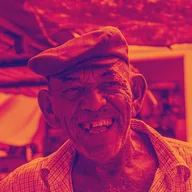

Verloopkaart

Kleurt het beeld op helderheid opnieuw in met drie kleuren, met herhalingen en een fase. Helderheid schalen vermenigvuldigt het resultaat met de eigen helderheid van het beeld.
Instellingen
| Instelling | Type | Bereik | Standaard |
|---|---|---|---|
| Schaduwen | Kleur | – | #1B1464 |
| Middentonen | Kleur | – | #D4145A |
| Hooglichten | Kleur | – | #FBB03B |
| Herhaling | Getal | 0.1 tot 10 | 1 |
| Fase | Getal | 0 tot 1 | 0 |
| Omkeren | Aan of uit | – | Uit |
| Helderheid schalen | Aan of uit | – | Uit |
| Verzadiging | Getal | 0 tot 2 | 1 |
| Dekking | Getal | 0 tot 1 | 1 |
| Stijl | Keuze | Verloop, Spectrum | Verloop |